找一个变化
先问：这个人在这段时间里，什么变了？搬走、毕业、开店、戒掉、第一次上台。变化可以是外部事件，也可以是态度。
没有变化，就只能拍成一堆好看的素材。变化不需要宏大，哪怕只是“他终于愿意看镜头”。
案例：8 分钟纪录短片，等来一个“变化”才开机（匿名复合复盘）
案例说明：匿名复合复盘，来自多个同类型项目的合并与改写；金额为区间，人物、地点与客户信息已隐去，不对应单一真实客户。
| 项目 | 约束 | 结果 |
|---|---|---|
| 8 分钟纪录短片 | 1 个夜间摊主、3 个拍摄夜、1 人团队 | 无旁白，现场声为主 |
| 预算区间 | ¥2,000–6,000 | 没有灯光车，只有一盏 practical |
| 变化 | 摊主决定是否换到室内 | 结尾没有替人物做决定 |
现场发生了什么
- 第一夜拍了 40 分钟素材，全是流程，没有变化；回去只保留“等客”和“收摊”两个动作。
- 第二夜下雨，摊主第一次说“可能不做了”；这句话成了片子的转折，但画面只拍他擦桌子，不拍采访。
- 第三夜他决定再试一个月；片子停在把灯收进箱子，不解释未来。
取舍
放弃“城市夜经济”的宏大旁白，也放弃采访补叙。所有信息来自现场：雨声、收摊、和隔壁摊主的一句对话。最后 8 分钟里没有一句“这意味着什么”，把判断留给观众。
可复用 / 不可照搬
- 可复用：纪录短片要等一个决定发生；没有变化，就继续拍或换人物。
- 不可照搬：摊主愿意被拍，不代表所有脆弱人物都愿意；发布前必须重新确认授权和可识别信息。
采访问题
不要问“你怎么看”。问具体的事：“那天你几点起床？”“你第一次收钱是什么感觉？”“你当时说了什么？”细节会带出情绪，观点不会。
让受访者讲完，不要急着接话。沉默三秒，常常比追问更有用。
DIAGRAM / DOC
纪录短片：等一个变化

结构
用“变化—阻碍—代价—现在”四段。先给一个正在发生的事，再回到变化怎么开始，最后落在今天的一个动作。
不要用旁白解释所有背景。让画面和现场声承担一半信息，旁白只补观众看不到的那一半。
图片说明：本页封面、图解与步骤图是编辑示意或结构图，不是本页实测照片，也不能当作器材测试证据；AI 辅助生成的图会在图注标出。判断器材或画面，以正文的测试条件与现场记录为准。